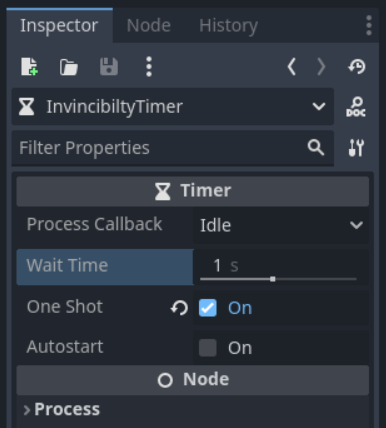
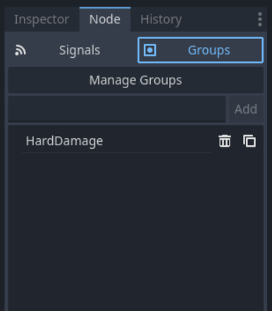

Continuing from where we left off, I mentioned there was two issues with the health that had to still be solved. Those issues are 1) the ability for the player to not take damage if they stay within the collider of a single hazard and 2) the ability for the player to effectively go through some hazards we may not want them to (like the void collider or lava.) On this page we will fix both of those issues by adding Strong Damage and Invincibility Frames.
Invincibility frames are a time after the player takes damage where they cannot take damage again. To add this go to the player scene. Right click the player node and create a new Timer node. Rename it to InvincibilityTimer. In the inspector set it's wait_time to 1 second and set it's one_shot property to true.
Next open the player script. Select the InvincibilityTimer node and drag it into the reference variables section, start holding control and drop it in to get it as a reference variable.
# Reference Variables
var gravity = ProjectSettings.get_setting("physics/2d/default_gravity")
@onready var sprite = $AnimatedSprite2D
@onready var invincibilty_timer = $InvincibiltyTimer
var respawn_point = Vector2.ZERO
var current_health = max_healthNext, in the damage function, we will want to set the function to only run if the invincibility timer has no time left, and start the timer when the player does take damage, like so:
func damage():
if invincibilty_timer.time_left == 0.0:
current_health -= 1
invincibilty_timer.start()
if current_health <= 0:
die()Finally, we want to check if the player is still touching a hazard when the invincibility timer runs out. We can do this by connecting the invincibility timer's timeout signal from the node tab in the inspector to the player script and quickly disabling and re-enabling the player's hazard collider when the signal occurs.
func _on_invincibilty_timer_timeout():
$HazardCollider/CollisionShape2D.disabled = true
$HazardCollider/CollisionShape2D.disabled = falseThere is problem one solved, but also it has made problem two even worse! Fortunately we have a solution.
Hard damage is damage that forces the player to reset. Many games have bottomless pits and lava that returns the player to solid ground, regardless of health. To start setting it up for our game, let's assign a new group to our VoidCollider node in the world scene. Select the VoidCollider, then in the inspector select the node tab and then the group tab. In the empty box type HardDamage and then press add.
You can add this group to any hazard to force the player to reset if they collide with it. I would recommend adding it to the LavaTiles node if you have it.
Next, back in the player script go to the damage function. First add a new argument to the function called hardDamage with a required bool data type. Next, in the if statement where we check if the invincibility_timer has time left, add or hardDamage (we do to make sure hardDamage ignores invincibility so the player cannot slip through.) Finally, at the bottom of the function add if hardDamage: global_position = respawn_point.
func damage(hardDamage : bool):
if invincibilty_timer.time_left == 0.0 or hardDamage:
current_health -= 1
invincibilty_timer.start()
if current_health <= 0:
die()
if hardDamage: global_position = respawn_pointOf course, we still need to make sure we are passing our new argument to our damage function. We can do this in both our _on_hazard_collider_body_entered and _on_hazard_collider_area_entered functions by adding a check for if the body or area are in the HardDamage group in our call_deferred method like so:
func _on_hazard_collider_body_entered(_body):
call_deferred("damage",_body.is_in_group("HardDamage"))
func _on_hazard_collider_area_entered(_area):
call_deferred("damage",_area.is_in_group("HardDamage"))And that is health complete! Go ahead and test it out and then move on to another module!